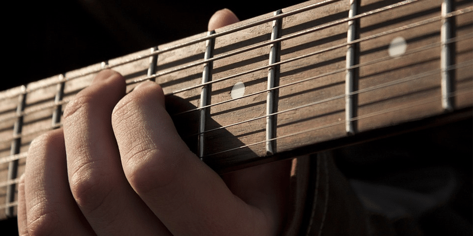

1991. április 28-án születtem, Budapesten. Azóta is ebben a városban élek.
Általános és közép iskolai tanulmányaimat zenei tagozaton végeztem el, ezáltal a zene nagyon közel áll hozzám.
Ennek köszönhetően a zenélés is nagyon hamar elkezdődött. 13 évesen kezdtem el gitározni megtanulni, amit a mai napig űzök.
A rock és metal zenét ezzel egy időben kedveltem meg, így nagyon sok inspirációt kaptam az olyan zenekaroktól mint az Iron Maiden, Metallica, stb.